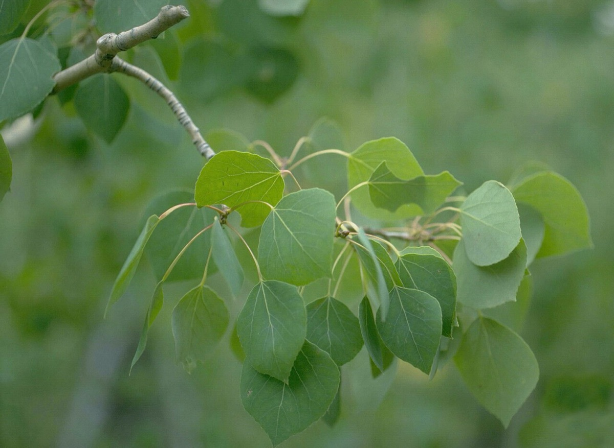
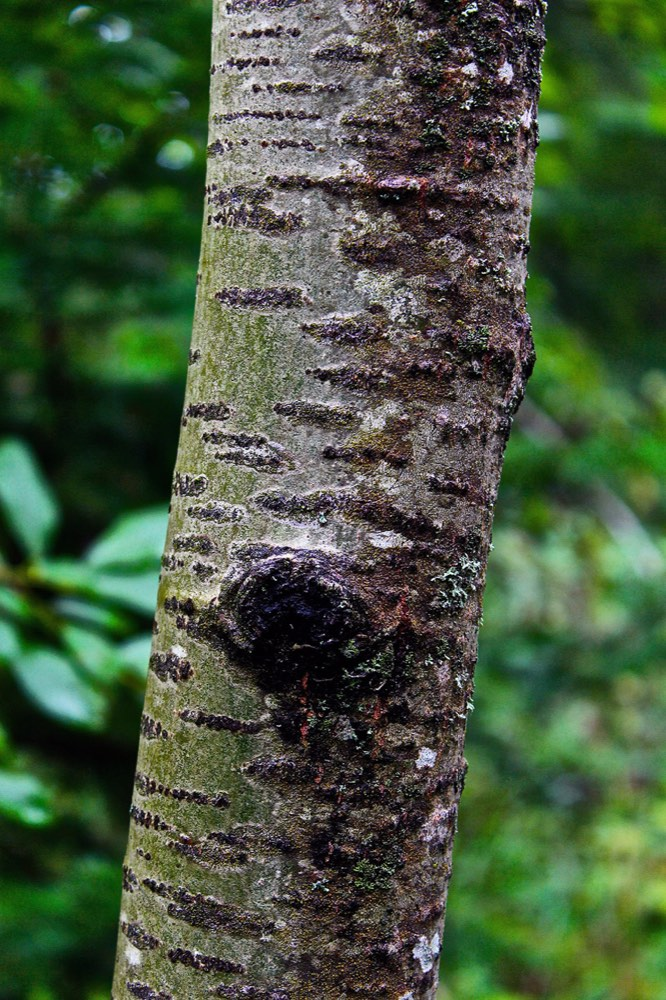

Quaking Aspen
Populus tremuloides
- Also called
- Aspen
- Kind
- tree · Salicaceae
- Native to Vermont
- yes
- Legal status
- Native; no special legal status found (checked 2026-10-30)
- Look-alikes
- Bigtooth aspen; Black cottonwood; Balsam poplar; Fremont cottonwood
Pictures


Names
Quaking aspen, Populus tremuloides. The Landowner's Guide calls it simply aspen.
Range and habitat
Native. A small, upright tree, 30 to 40 feet, often growing in thickets. Aspen sprouts prolifically when cut, which is why foresters use it for young-forest wildlife habitat (Ruffed Grouse).
How to identify (by season; look-alikes and the key difference)
- Leaves: alternate, simple, nearly round to heart-shaped, 1 to 3 inches, fine-toothed, on a flattened leaf stalk (which lets them tremble); green above and paler below.
- Flowers and fruit: male and female catkins (1 to 3 inches) on separate trees; seeds are tiny and hairy in light green capsules on a catkin 2 to 4 inches long. Timing is not stated.
- Look-alikes: bigtooth aspen, black cottonwood, balsam poplar and Fremont cottonwood.
By growth stage (trees: seedling, sapling, pole-size, mature or old; what to look at in each)
| Stage | What to look at | What you see |
|---|---|---|
| Small seedling | leaf base, teeth | Leaf bases typically heart-shaped (cordate); minute, shallow, rounded teeth. |
| Larger seedling | leaf stalk, leaf size | A flattened leaf stalk; dying leaves show black patches or turn entirely black; some seedlings grow huge leaves, far bigger than an adult's. Quaking aspen seedlings appear in unlikely places, from spruce-fir to northern hardwood forest. |
| Sapling and pole-size | bark, twig | Smooth creamy yellowish-white to very light green bark; slender hairless reddish-brown twigs. |
| Mature and old trees | bark | Thick furrows, dark, especially near the base. Adult leaves are generally under 3 inches. |
| Winter, any age | twig, bud | Conical reddish-brown buds about 1/4 inch, slightly resinous; gray waxy film on twigs. |
Through the year
Dates are typical for Vermont and shift with elevation and year; "approximate" means the source gave a season and the dates are a translation of it.
| When | What | Look for | What to do | Dates |
|---|---|---|---|---|
| Apr 1 to Apr 30 | calling (watch) | Aspen stands are the key habitat where male ruffed grouse drum in April; the buds of mature male aspen are a preferred winter food. | - | approximate |
| Nov 1 to Mar 31 | dormant (identify) | Young bark smooth and creamy yellowish-white to pale green; slender hairless reddish-brown twigs often with a gray waxy film; conical reddish-brown buds about 1/4 inch; older bark thickly furrowed and dark, especially near the base. Often in thickets of root sprouts. | - | approximate |
Signs on the land (tracks, scat, browse, nests, holes, calls)
See Ruffed Grouse: drumming logs and rock walls in young hardwood stands with aspen.
Role in the forest (what it eats, what eats it, what it needs)
The Landowner's Guide calls aspen a key tree for ruffed grouse (winter bud food; dense young stands as cover). Deer and moose browse young aspen (White-tailed Deer, Moose).
What helps it thrive (light, soil, shelter, food and the trees it uses)
- Light: shade intolerant; it cannot reproduce beneath its own canopy (FEIS).
- Soil and water: grows on soils from shallow and rocky to deep loamy sands and heavy clays; good sites are usually well drained, loamy and high in organic matter and nutrients; it tolerates neither long-term flooding nor waterlogged soils.
- Regeneration, the key need: root sprouting is the most common method. It readily colonizes after fire, clearcutting or other disturbance; clearcutting often produces a sucker stand of 50,000 to 100,000 stems per hectare, while partial cuttings seriously inhibit sprouting because standing stems keep apical dominance.
- Wildlife: ruffed grouse eat six times more aspen buds than the buds of all other species combined; deer use it as forage; beavers eat the leaves, bark, twigs and branches of all sizes; it is valuable moose browse for much of the year (Ruffed Grouse, Moose).
Managing for it (habitat practices) and living with it (conflicts and damage)
From the grouse guidance: aspen sprouts when cut; a stand with a minor aspen component can convert to mostly aspen if clearcut during dormancy, but there must already be vigorous aspen; keep some groups of mature aspen for winter food; treat one quarter of the stands every 10 years (Ruffed Grouse). In deer-yard work, aspen may be left uncut because late-succession trees will eventually replace it (White-tailed Deer).
Legal status
No special status found.
Sources
- Virginia Tech Dendrology, Quaking aspen: https://dendro.cnre.vt.edu/dendrology/syllabus/factsheet.cfm?ID=160 (read 2026-10-30)
- J. Robertson and J. Truong, A Guide to the Seedlings of New England (FEMC, 2021): https://www.uvm.edu/femc/attachments/project/999/seedling_guide-compressed_1.pdf
- Vermont Fish & Wildlife Department, A Landowner's Guide, ruffed grouse and deer chapters
- USDA Forest Service, Fire Effects Information System, Populus tremuloides: https://www.fs.usda.gov/database/feis/plants/tree/poptre/all.html (read through a summarizing fetch 2026-11-01)
What this page is based on
Kind of source: mixed (Virginia Tech factsheet; New England seedling guide; the Vermont Landowner's Guide for grouse)
What was read: Virginia Tech Dendrology factsheet (ID 160) for quaking aspen, read through a summarizing fetch on 2026-10-30, and the quaking aspen pages of A Guide to the Seedlings of New England (read as text). The factsheet states no flower, catkin or seed timing and gives no habitat; 'aspen' is the name used in the Landowner's Guide. A search summary of the landowner sheet (pioneer species, shade intolerant, regenerates by root suckering after clearcutting) was not read on the page. The second calendar entry is about the grouse, not the tree, and is approximate. Habitat needs (light, soil, regeneration, response to cutting) added 2026-11-01 from the USDA Forest Service Fire Effects Information System species review (summarizing fetch); the review is national in scope and the Northeast details are those it names.
Last checked: 2026-10-30
Vermont land and forest reference, built 2026-11-01. Rules and dates here are summaries, not legal advice; dates shift with elevation and year. Photo and recording credits · Note: _reference/US-VT/Species/Quaking Aspen.md